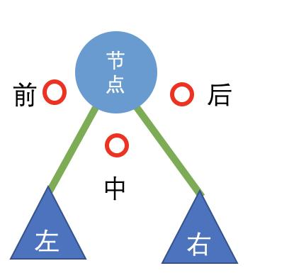
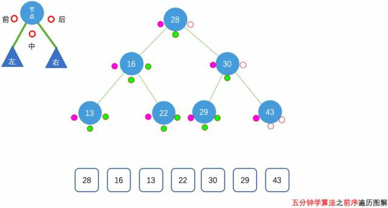
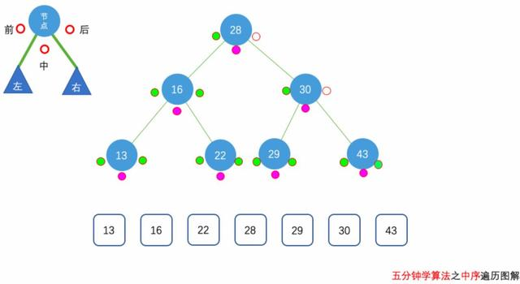
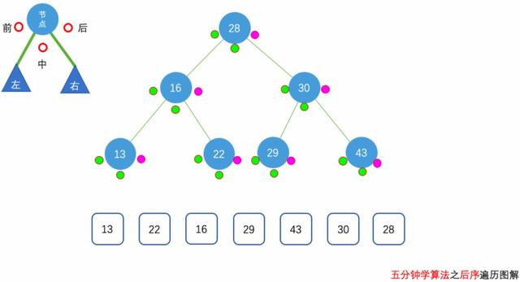

一文弄懂二叉树三种遍历
二叉树的遍历是指从根结点出发，按照某种次序依次访问二叉树中所有结点，使得每个结点被访问一次且仅被访问一次。
在二叉树的遍历中存在三种较为常用的遍历方式：前序遍历、中序遍历、后序遍历。本文笔者将尝试着以图文结合的方式向读者详细的介绍这三种遍历方式的逻辑思路，希望让读者看到任何的二叉树都能在脑海中快速的勾勒出动画。
前提
在介绍这三组动画前，我们先用图来介绍一下二叉树的创建以及动画中的一些约定说明。

如图所示是二叉树中的一个节点，这个节点有左子树与右子树，通过两根绿色的连接线，将此节点划分成了三个区域，我们分别用前、中、后这三个辅助点来表示。
这三个点表明在二叉树的遍历中什么时候要取出此节点的值。
任何一个节点去遍历都是：前-左绿线-中-右绿线-后，这样的顺序遍历的。
前序遍历
使用递归方式实现前序遍历的具体过程为：
先访问根节点；
再序遍历左子树；
最后序遍历右子树；

我们来对上图进行一个充分的说明来理解前序遍历的递归实现方式。
首先访问了28这个节点，我们看前辅助点，由于是前序遍历，那么此刻我们取出该节点的值28；
而后通过左绿线访问28的左子树；
在16这个节点中，我们看前辅助点，由于是前序遍历，取出该节点的值16；
通过左绿线访问16的左子树；
在13这个节点中，我们看前辅助点，由于是前序遍历，取出该节点的值13；
13这个节点左子树为空，那么我们左绿线就没有，然后看中辅助点，由于是前序遍历，因此不做处理；
13这个节点右子树为空，那么我们右绿线就没有，然后看后辅助点，由于是前序遍历，因此不做处理；
而后回到16这个节点中，看中辅助点，由于是前序遍历，因此不做处理；
而后看16这个节点的右子树22这个节点，看前辅助点，由于是前序遍历，取出该节点的值22；
代码实现：
/// 144. Binary Tree Preorder Traversal
/// https://leetcode.com/problems/binary-tree-preorder-traversal/description/
/// 二叉树的前序遍历
/// 时间复杂度: O(n), n为树的节点个数
/// 空间复杂度: O(h), h为树的高度
class Solution {
public:
vector<int> preorderTraversal(TreeNode* root) {
vector<int> res;
__preorderTraversal(root, res);
return res;
}
private:
void __preorderTraversal(TreeNode* node, vector<int> &res){
if(node){
res.push_back(node->val);
__preorderTraversal(node->left, res);
__preorderTraversal(node->right, res);
}
}
};
中序遍历
使用递归方式实现中序遍历的具体过程为：
先中序遍历左子树；
再访问根节点；
最后中序遍历右子树；

我们来对上图进行一个充分的说明来理解中序遍历的递归实现方式。
首先访问了28这个节点，我们看前辅助点，由于是中序遍历，因此不做处理；
而后通过左绿线访问28的左子树；
在16这个节点中，我们看前辅助点，由于是中序遍历，因此不做处理；
通过左绿线访问16的左子树；
在13这个节点中，我们看前辅助点，由于是中序遍历，因此不做处理；
13这个节点左子树为空，那么我们左绿线就没有，然后看中辅助点，由于是中序遍历，取出该节点的值13；
13这个节点右子树为空，那么我们右绿线就没有，然后看后辅助点，由于是中序遍历，因此不做处理；
而后回到16这个节点中，看中辅助点，由于是中序遍历，取出该节点的值16；
而后看16这个节点的右子树22这个节点，看前辅助点，由于是中序遍历，因此不做处理；
看中辅助点，由于是中序遍历，取出该节点的值22；
代码实现：
/// 94. Binary Tree Inorder Traversal
/// https://leetcode.com/problems/binary-tree-inorder-traversal/solution/
/// 二叉树的中序遍历
/// 时间复杂度: O(n), n为树的节点个数
/// 空间复杂度: O(h), h为树的高度
class Solution {
public:
vector<int> inorderTraversal(TreeNode* root) {
vector<int> res;
__inorderTraversal(root, res);
return res;
}
private:
void __inorderTraversal(TreeNode* node, vector<int> &res){
if( node ){
__inorderTraversal(node->left, res);
res.push_back( node->val );
__inorderTraversal(node->right, res);
}
}
};
后序遍历
使用递归方式实现后序遍历的具体过程为：
先后序遍历左子树；
再后序遍历右子树；
最后访问根节点；

我们来对上图进行一个充分的说明来理解后序遍历的递归实现方式。
首先访问了28这个节点，我们看前辅助点，由于是后序遍历，因此不做处理；
而后通过左绿线访问28的左子树；
在16这个节点中，我们看前辅助点，由于是后序遍历，因此不做处理；
通过左绿线访问16的左子树；
在13这个节点中，我们看前辅助点，由于是后序遍历，因此不做处理；
13这个节点左子树为空，那么我们左绿线就没有，然后看中辅助点，由于是后序遍历，因此不做处理；
13这个节点右子树为空，那么我们右绿线就没有，然后看后辅助点，由于是后序遍历，取出该节点的值13；
而后回到16这个节点中，看中辅助点，由于是后序遍历，因此不做处理；
而后看16这个节点的右子树22这个节点，看前辅助点，由于是中序遍历，因此不做处理；
看中辅助点，由于是后序遍历，因此不做处理；
看后辅助点，由于是后序遍历，取出该节点的值16；
代码实现：
/// 145. Binary Tree Postorder Traversal
/// https://leetcode.com/problems/binary-tree-postorder-traversal/description/
/// 二叉树的后序遍历
/// 时间复杂度: O(n), n为树的节点个数
/// 空间复杂度: O(h), h为树的高度
class Solution {
public:
vector<int> postorderTraversal(TreeNode* root) {
vector<int> res;
__postorderTraversal(root, res);
return res;
}
private:
void __postorderTraversal(TreeNode* node, vector<int> &res){
if( node ){
__postorderTraversal(node->left, res);
__postorderTraversal(node->right, res);
res.push_back(node->val);
}
}
};
作者简介：菠了个菜，本文首发于个人公众号「五分钟学算法」。「五分钟学算法」是致力于通过各种动画的形式来描绘出各种数据结构，并图解 LeetCode 原题的学习平台。
本文系作者投稿，版权归作者所有。